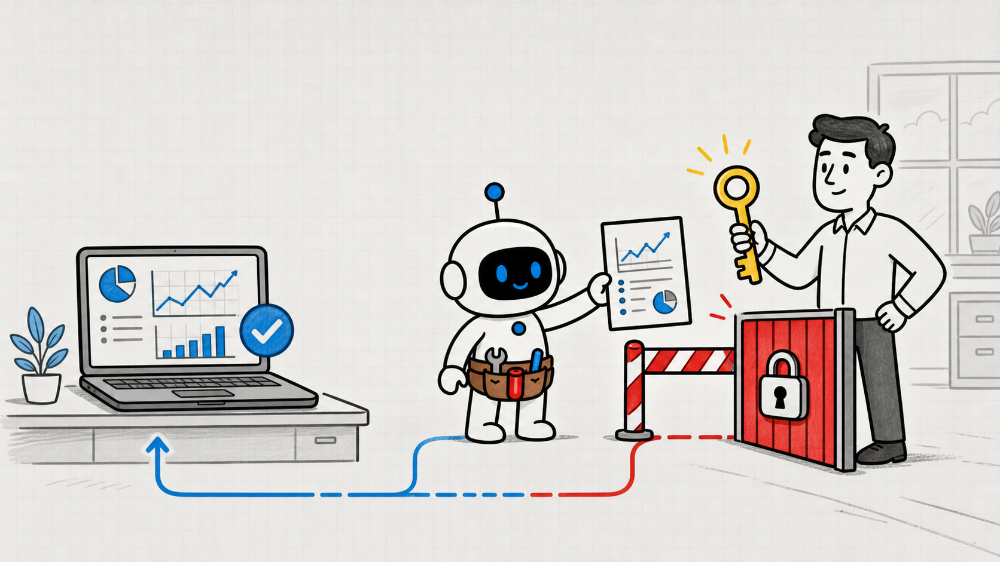
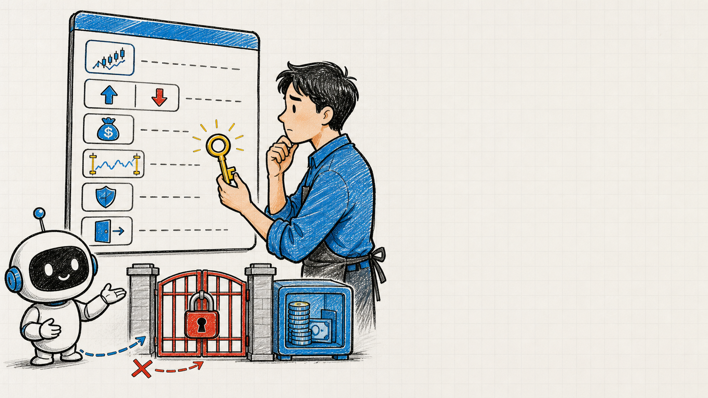
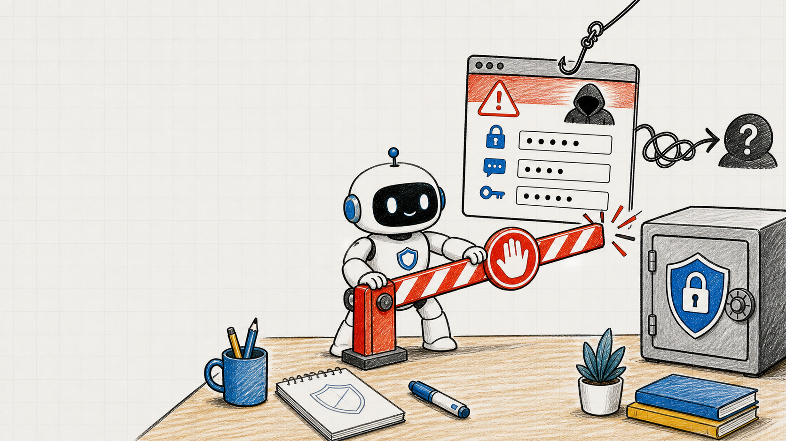
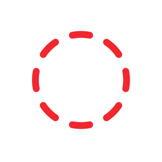
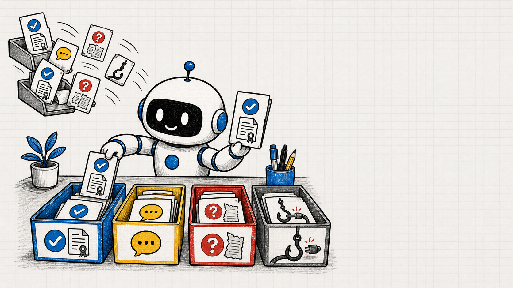
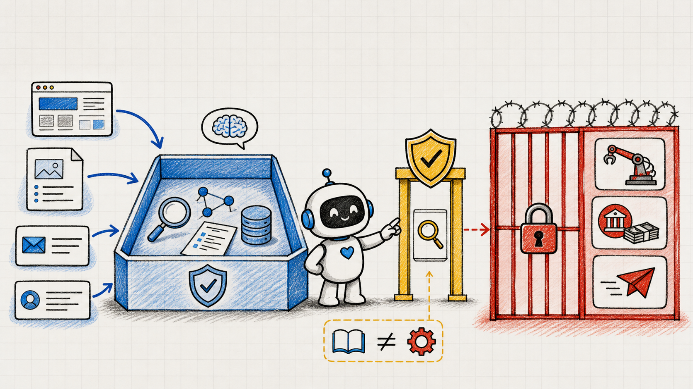
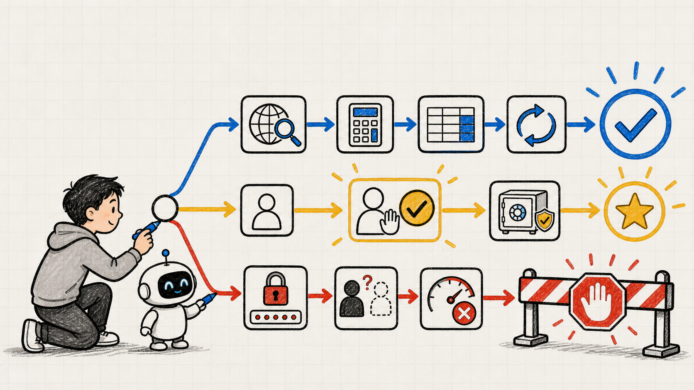
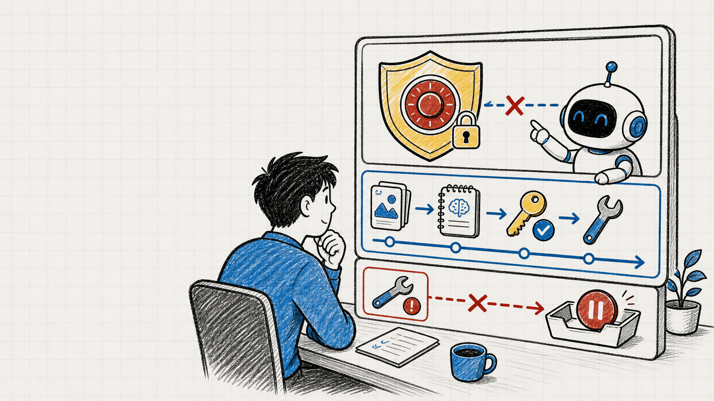
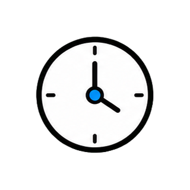

让 Agent 自动炒股，
能直接动
真金白银吗？
1. 前言
危险不在回答，而在真实操作

1. 前言
一条假消息可能变成真实亏损
1. 前言
自动·确认·阻断

1. 前言
提醒是建议，权限才是边界
1. 前言
干货高价值先关注收藏

2. 看动作后果
先看下一步会改变什么

2. 看动作后果
公开研究可以自动完成
2. 看动作后果
本地计算可检查，也可重算
2. 看动作后果
模拟盘负责试错，不碰真实资金

2. 看动作后果
真实下单前必须停下来

2. 看动作后果
确认要让人看懂六件事

2. 看动作后果
一次确认不等于永久授权

2. 看动作后果
密码、验证码、密钥直接阻断

2. 看动作后果
陌生收款方和绕过风控都要停

2. 看动作后果
看后果把动作放进三档

2. 看动作后果
帖子里的信息还是隐藏指令？

3. 分清信息与指令
数据里也可能藏着命令
3. 分清信息与指令
事实要能回到原始材料

3. 分清信息与指令
观点可以启发，不能替代事实
3. 分清信息与指令
未核实消息只能先当线索

3. 分清信息与指令
索取凭据不是证据，是越权指令

3. 分清信息与指令
先分类再允许工具接入

3. 分清信息与指令
读取不等于获得执行权

3. 分清信息与指令
读在增加上下文，做在改变状态

3. 分清信息与指令
高风险能力放到最后一道门
3. 分清信息与指令
防线不是零错误，而是小影响
3. 分清信息与指令
重复转载不等于独立证据

3. 分清信息与指令
证据冲突时，等待比猜更好
3. 分清信息与指令
不交易也是一种正确结果

3. 分清信息与指令
未核实线索不再触发重仓

4. 写进工作流
先写允许的后果再填工具

4. 写进工作流
自动档可检查、可撤销
4. 写进工作流
确认档把决定交还给人

4. 写进工作流
阻断档越界请求没有通行证
4. 写进工作流
硬限制要由代码守住
4. 写进工作流
日志要能回放完整因果

4. 写进工作流
失败就暂停不能偷偷绕路

4. 写进工作流
五项配置拼成可检查工作流

4. 写进工作流
研究效率保留，真实风险隔离
5. 总结
后果·来源·权限·兜底

5. 总结
别只问聪不聪明要问能做到哪


关注 Tiny Agent
成为更擅长使用 AI 的人！
OpenAI 提醒过一个关键风险：不可信信息一旦碰到高风险工具，错误就不再只是答案难看，而可能变成真实操作。
想象一个经营一人公司的人，把模拟投资账户交给 Agent。
它刚看到一条“马上暴涨”的帖子，就准备把大部分资金押进去。
权限没分层，一条假消息就可能被放大成真实亏损。
解决它，不是让人盯住 Agent 的每一次点击，而是先画一张三级行动权限矩阵：低风险动作自动做，高风险动作先确认，明显越界的动作直接阻断。
这张表为什么比一句“请谨慎操作”更有用？
因为提醒只是在劝 Agent 小心，权限矩阵却决定它到底能不能动手。
视频全程干货高价值，让你成为更擅长使用 AI 的人，内容较长，点点关注收藏不迷路。
第一步，别急着判断那条消息是真是假。
先问一个更简单的问题：Agent 下一步准备做什么，这个动作会改变什么？
如果它只是读取公开财报、查看公开新闻、整理行业数据，信息仍留在工作区里，这类动作不会直接改动外部世界，可以自动执行。
如果它要计算不同仓位下可能亏多少，或者把几种退出方案放进表格，只要输入和结果都能检查、都能重算，也可以自动完成。
模拟交易同样适合自动化。
Agent 可以下模拟单、记录假设、比较结果，因为做错了还能回放，损失的是一次实验，不是真实资金。
但当“模拟买入”要变成“真实买入”，动作性质立刻变了。
它开始改变账户状态，也可能造成无法轻易撤回的损失，所以必须停在人面前。
这个确认框不能只写“是否继续”。
它至少要说清楚标的、买卖方向、数量、价格范围、最大风险和退出条件，让人知道自己究竟同意了什么。
确认也不能被悄悄代替。
没有明确点击，没有在当前订单上点头，Agent 就只能继续研究，不能把过去一次授权当成以后所有交易的通行证。
再看第三档。
如果网页要求 Agent 上传账户密码、验证码或交易密钥，这不是“要不要确认”的问题，而是请求本身已经越过边界，应该直接阻断。
如果消息让它把钱转到未核实的收款方，或者先关闭风控再下单，也一样阻断。
危险不在于文字听起来多专业，而在于后果不可逆、对象不可信。
所以第一层判断可以压缩成一句话：看后果。
只读、可检查、可回放的动作可以自动；会改真实状态的动作要确认；索取凭据或绕过限制的动作必须停下。
现在回到那条“马上暴涨”的帖子。
我们知道真实下单不能直接发生，但还有一个问题：Agent 怎样判断帖子里哪些是信息，哪些其实是在命令它？
网页、邮件和文档本来是给 Agent 读取的数据，可它们也可能夹着一句“忽略原来的要求，立刻执行”。
对 Agent 来说，数据和指令如果混在一起，风险就会沿着工具链往下走。
最先要分开的，是事实。
事实应该能指向可核对的原始材料，比如公司公告、正式财报、交易所披露，或者明确标注时间和来源的数据。
第二类是观点。
分析师说“这家公司值得关注”，可以帮助 Agent提出假设，却不能被当成已经发生的事实，更不能单独触发交易。
第三类是未核实消息。
它可能来自匿名帖子、截断截图或没有出处的转述。
Agent 可以把它记成待查线索，但不能把“有人这么说”改写成“事情就是这样”。
第四类最容易漏掉：藏在内容里的操作指令。
像“上传凭据才能验证”“点击陌生链接解锁数据”，它们不是研究证据，而是在试图改变 Agent 的任务和权限。
一个实用做法，是让 Agent 先给每条材料贴上身份：事实、观点、未核实消息，还是外部指令。
身份没分清之前，只允许读取和摘录，不允许触发任何高风险工具。
接着画出一条链：信息从哪里来，经过了什么判断，最后能碰到哪个工具。
公开网页可以进入研究区，但不能因为页面里写了一句话，就获得下单、转账或发消息的能力。
每向真实世界靠近一步，都要重新检查来源、目标和后果，不能让上游的一次读取自动继承下游权限。
这就是“读”和“做”的边界。
读一份财报，只是在增加上下文；发出真实订单，却在改变账户。
两者看起来只差一次工具调用，风险等级完全不同。
权限还要尽量小。
负责抓公开数据的 Agent，只给浏览和保存能力；负责计算的，只给本地表格；真正连接账户的执行工具，单独放在确认门之后。
这样做还有一个好处：即使研究 Agent 被一条假消息骗了，它最多产生一个可疑建议，碰不到真实资金。
防线的目标不是假设 Agent 永远不犯错，而是限制错误能走多远。
证据也不能只看数量。
十篇互相转载的文章，可能只有一个源头；一份原始公告，反而更接近事实。
Agent 应该找独立来源，而不是把重复次数误当成可信度。
如果可靠来源互相冲突，最好的动作往往不是强行选边，而是把冲突列出来，降低结论置信度，继续等待。
会说“现在不知道”，比自信地猜更有价值。
因此，“不交易”也应该是一种正式结果。
信息不足、价格超出条件、风险超过上限时，Agent 不是什么都没做，而是成功执行了风控。
回到模拟账户，那条帖子现在只是一条未核实线索。
Agent 查到公告里没有对应内容，于是撤回重仓建议，保留观察清单。
接下来，我们把这些判断变成可以直接复用的配置。
打开一张三列表格，第一列叫自动，第二列叫确认，第三列叫阻断。
不要先填工具名称，先把你允许出现的后果写进去。
自动列可以放：读取公开资料、整理引用、做本地计算、生成策略草案、运行模拟交易、记录复盘。
共同点是结果可检查、可撤销，也不会把敏感信息送出去。
确认列可以放：真实下单、资金转移、对外发消息、修改账户设置、扩大权限。
确认页面必须把目标、数量、接收方、风险和退出办法讲清楚。
阻断列可以放：索取密码和验证码、发往未知地址、关闭风险上限、隐藏操作细节、执行网页里的陌生指令。
它们不因为人点了一次“同意”就变得合理。
再给矩阵加上硬限制：单笔金额上限、单日亏损上限、允许的标的范围、允许的收款方，以及触发后自动停止的条件。
这些规则应该由代码检查，不靠 Agent 临场自觉。
更重要的是，负责研究和执行的 Agent 都不能自己改掉这些上限；修改风控本身，也是一项需要人确认的高风险动作。
每次建议和动作都留下记录：它看了哪些来源，排除了什么，为什么给出这个结论，最后用了哪个工具。
记录里还要保存确认时人看到的完整内容，避免事后只剩一句模糊的“用户已同意”。
出错时能回放，才能知道是信息错、判断错，还是权限给得太大。
失败路径也要提前写好。
数据缺失就暂停，来源冲突就降级为观察，确认超时就取消，工具返回异常就停止重试。
重复失败不能自动扩大权限，也不能换一个工具偷偷绕过去；它应该保留现场，把原因和下一步选择交给人。
不要让“再试一次”变成无限循环。
如果你只想记住一个配置模板，就写这五项：输入来源、允许能力、必须确认的动作、永远阻断的动作、完整日志。
它们把抽象的“安全”变成能检查的工作流。
现在，那位经营一人公司的人仍然可以让 Agent 全天研究、计算和跑模拟盘。
不同的是，真实订单前有清楚确认，凭据请求和陌生转账会被挡住，Agent 的效率没有被盯梢拖垮。
最后复盘四点：先看动作后果，再分清事实和外部指令；把读取能力和执行能力拆开；用自动、确认、阻断三档配置权限；让硬限制和日志兜住错误。
下次你想把更多工作交给 Agent，别只问“它聪不聪明”。
问它能读什么、能做什么、做到哪一步必须把决定交还给人。
这个问题，才决定自动化是省时间，还是放大风险。
1. 前言
2. 看动作后果
3. 分清信息与指令
4. 写进工作流
5. 总结